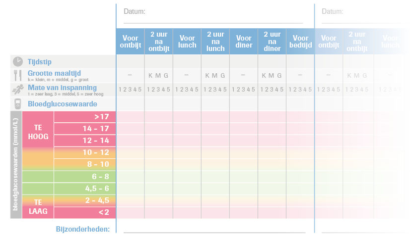

Jeroen doorloopt de volgende fases
Wat wil je bereiken met het TOP Performa programma?
- Juist gebruik bloedglucosemeter
- Juiste dagcurve op goede moment
- Inzicht in relatie leefstijl en beweging op bloedglucose
- Ander gesprek met de patiënt op basis van inzichten in dagelijks leven achter dagcurve
TOP Performa: Stapsgewijs
De patiënt doorloopt verschillende fases in zijn behandeling van oraal naar insuline.
Deze fases kun je opsplitsen zodat de patiënt in iedere fase de juiste ondersteuning krijgt.
Welke handvatten heb je tot je beschikking?


Pre-Insuline fase
Accu-Chek® 360º View
Meer achtergrond informatie bij een dagcurve


Grootte maaltijd
k = klein, m = middel, g = groot


Mate van inspanning
k = klein, m = middel, g = groot

Pre-Insuline fase
Accu-Chek® 360º View
Meer achtergrond informatie bij een dagcurve

De patiënt kan meer inzicht krijgen in:
- Relevantie van meetmomenten
- Welke invloed voedsel en drinken
- Heeft op de bloedglucose
- Welke invloed bewegen heeft op de bloedglucose
Pre-Insuline fase
Accu-Chek® 360º View
Meer achtergrond informatie bij een dagcurve
Voor de zorgverlener biedt 360º View een handvat voor:
- Achtergrond en informatie achter debloedglucosewaarde
- Inzicht in bloedglucose verloop over de dag (waar gaat het goed en waar is verbetering mogelijk)
- Wijzigen orale therapie / insulinedosering